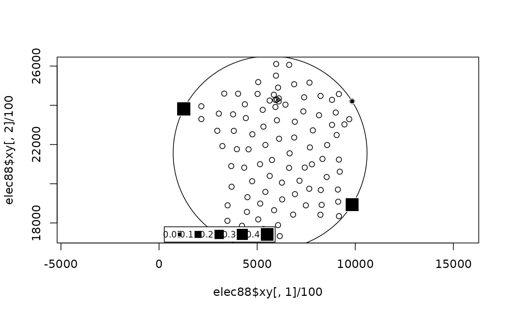

Maximal value of Rao's diversity coefficient also called quadratic entropy
divcmax.RdFor a given dissimilarity matrix, this function calculates the maximal value of Rao's diversity coefficient over all frequency distribution. It uses an optimization technique based on Rosen's projection gradient algorithm and is verified using the Kuhn-Tucker conditions.
Value
Returns a list
- value
the maximal value of Rao's diversity coefficient.
- vectors
a data frame containing four frequency distributions :
simis a simple distribution which is equal to \(\frac{D1}{1^tD1}\),prois equal to \(\frac{z}{1^tz1}\), where z is the nonnegative eigenvector of the matrix containing the squared dissimilarities among the elements,metis equal to \(z^2\),numis a frequency vector maximizing Rao's diversity coefficient.
References
Rao, C.R. (1982) Diversity and dissimilarity coefficients: a unified approach. Theoretical Population Biology, 21, 24–43.
Gini, C. (1912) Variabilità e mutabilità. Universite di Cagliari III, Parte II.
Simpson, E.H. (1949) Measurement of diversity. Nature, 163, 688.
Champely, S. and Chessel, D. (2002) Measuring biological diversity using Euclidean metrics. Environmental and Ecological Statistics, 9, 167–177.
Pavoine, S., Ollier, S. and Pontier, D. (2005) Measuring diversity from dissimilarities with Rao's quadratic entropy: are any dissimilarities suitable? Theoretical Population Biology, 67, 231–239.
Author
Stéphane Champely Stephane.Champely@univ-lyon1.fr
Sandrine Pavoine pavoine@mnhn.fr
Examples
data(elec88)
# Dissimilarity matrix.
d0 <- dist(elec88$xy/100)
# Frequency distribution maximizing spatial diversity in France
# according to Rao's quadratic entropy.
France.m <- divcmax(d0)
w0 <- France.m$vectors$num
v0 <- France.m$value
idx <- (1:94) [w0 > 0]
if(!adegraphicsLoaded()) {
# Smallest circle including all the 94 departments.
# The squared radius of that circle is the maximal value of the
# spatial diversity.
w1 <- elec88$xy[idx, ]/100
w.c <- apply(w1 * w0[idx], 2, sum)
plot(elec88$xy[, 1]/100, elec88$xy[, 2]/100, asp=1)
symbols(w.c[1], w.c[2], circles = sqrt(v0), inches = FALSE, add = TRUE)
s.value(elec88$xy/100, w0, add.plot = TRUE)
}
